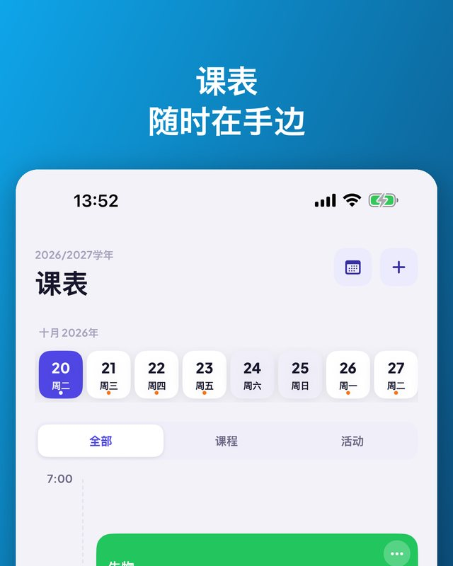
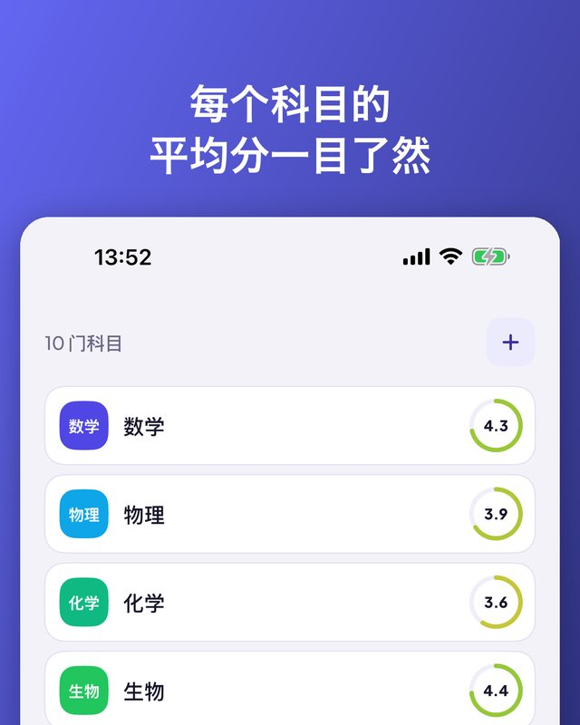
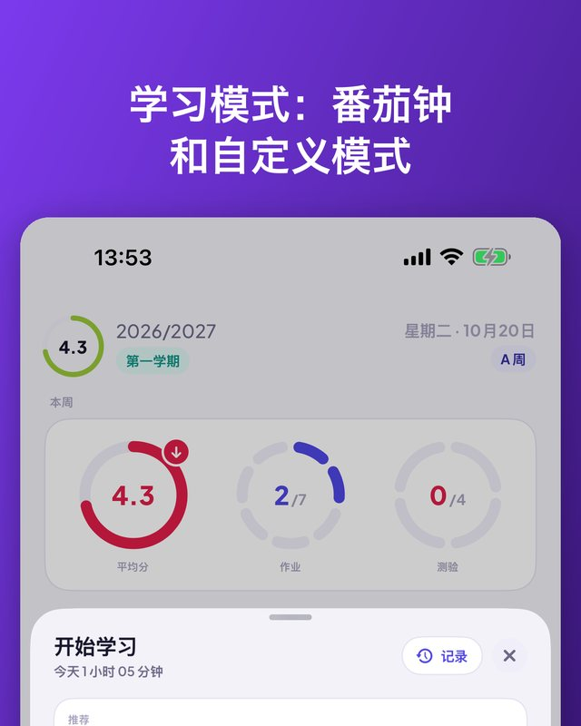

Kajet 是一款适合中小学和大学的学生规划应用。一天的安排一目了然，成绩带平均分，作业和测验带提醒，还有支持番茄钟的学习计时器。无需账号，没有广告。

日视图和周视图、教室、时间。
停课、代课或换教室，只改一天。
运动、音乐、辅导，并提醒出发时间。
在主屏幕和锁屏上显示下一节课。
自定义分类、备注和补考。
趋势、最强科目、拖后腿的科目。
学分、期末成绩、ECTS 加权平均。
设定门槛，看还差哪些成绩。
今天、明天、本周、以后。一键打勾。
提前一天或三天、晚上，或你选的时间。
倒计时或番茄钟，可关联测验。
7 天、一个月或一个学期，按科目查看。
每周总结和学习时机。仅在你的 iPhone 上运行。
询问下一节课，或用语音添加成绩。
复制上一学期，快速开始新学期。
跟随 iPhone 的语言。


应用、小组件、Siri 和快捷指令支持 13 种语言。Kajet 会跟随你 iPhone 的语言。
无需账号，没有广告，数据只属于你。
Kajet 以波兰的学校和大学体系为蓝本设计（1–6 分制、2.0–5.0 的大学评分制、ECTS），但在任何地方都能使用。适用于 iOS 17 或更高版本的 iPhone；AI 建议需要 iOS 26 和 Apple Intelligence。